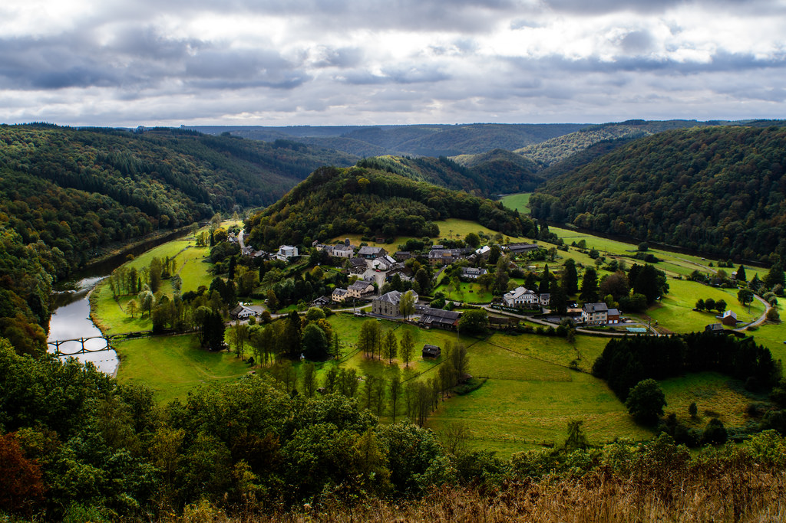
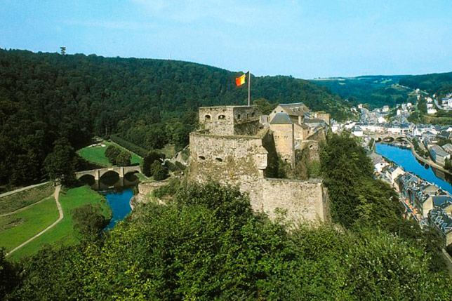
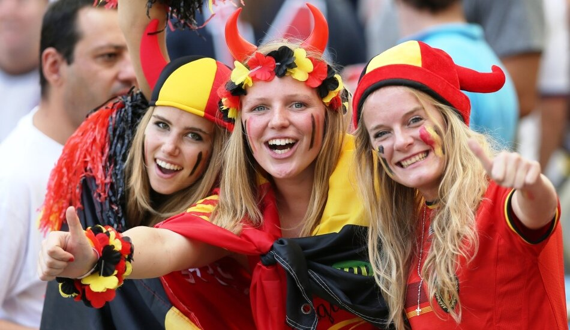
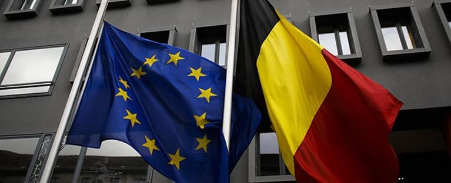

Бельгия
География
 Бельгия — государство в Западной Европе. Имеет площадь 30 528 км², омывается на северо-западе Северным морем. Большую часть страны занимают равнины с преобладающими культурными ландшафтами.
Общая протяженность сухопутных границ — 1385 км, протяженность границ с Францией — 620 км, Германией — 167 км, Люксембургом — 148 км, Нидерландами — 450 км. Береговая линия имеет длину 66,5 км. Общая площадь территории составляет 33 990 км², из которых морская прибрежная зона занимает 3462 км², а внутренние воды — 250 км². В северной части Бельгии под мощным мезо-кайнозойским осадочным чехлом находится докембрийский кристаллический фундамент. При движении на юг фундамент местами по долинам рек обнажается, а на юге страны выходит в виде герцинских складчатых сооружений, которые подверглись сильной денудации. На севере Бельгии в результате неоднократного воздействия талых ледниковых вод широко распространён лёсс.
Прочие полезные ископаемые: каменный уголь (в Кампине и по долинам рек Маас и Самбр); свинец, цинк, медь, сурьма (Арденны); гранит, песчаник, мрамор.
Климат
 Климат Бельгии можно отнести к так называемому Cfb-климату — умеренному морскому климату с мягкой зимой и прохладным летом. В зависимости от расстояния до воды, рельефа и типа почвы, можно также провести различия между мезоклиматами, соответствующими различным типам ландшафта. Помимо мезоклиматов можно выделить локальные климаты и микроклиматы, соответствующие определённому городу, лесу и другим небольшим зонам. На климат оказывает влияние близость Северного моря, которое сдерживает колебания температуры. Его влияние наименее выражено в восточной части страны. На побережье осенью и зимой климат, как правило, мягче, а на востоке теплее. Самый холодный месяц года — январь, самый жаркий — июль. Хотя в последние годы наблюдалось повышение средней температуры, естественные колебания температуры не позволяют однозначно связать потепление с усилением парникового эффекта. Побережье страны — наиболее солнечная её часть, где за год насчитывается порядка 1600 солнечных часов. Несмотря на образ чрезвычайно дождливого края, дождь в Бельгии идёт приблизительно 7 % времени. Тем не менее, в большей части страны осадки избыточны, особенно в самом влажном районе страны — плато От-Фань. Погода сильно зависит от типа приходящих воздушных потоков и атмосферных фронтов, которые разделяют различные типы воздуха. Чаще других в Бельгию приходит морской полярный воздух из Атлантического океана: влажный и холодный летом, влажный и умеренно теплый зимой. При штормовом северо-западном ветре морской арктический воздух вызывает похолодание. Летом теплый и сухой континентальный полярный воздух поступает из России и Сибири. Зимой такой воздух приводит к сухой и холодной погоде. Теплый морской тропический воздух является причиной туманов зимой и гроз летом. Континентальный тропический воздух теплый и сухой.
Население
Население Бельгии по данным Бельгийского статистического бюро "Statbel" на 1 января 2020 года составляет 11 492 641 человек. Из них 50,8% составляют женщины и 49,2% - мужчины. Население Бельгии выросло на 55.336 человек, или на 0,49% в годовом исчислении, что соответствует показателям прироста населения в последние несколько лет. По состоянию на 2016 год, 69,8% населения Бельгии составляло коренное население, 16,5% - иммигранты первого поколения, а 13,7% - иммигранты второго поколения. По состоянию на 2019 год, по оценкам ООН, в Бельгии проживало 2 миллиона иммигрантов, составляющих 17,2% населения страны.

Экономика
 Бельгия — высокоразвитое постиндустриальное государство[11] с интенсивным сельским хозяйством. Один из ведущих мировых экспортёров чёрных и цветных металлов (экспортируется около 40 % промышленной продукции). Из отраслей машиностроения наиболее развиты автосборочная, электротехническая и радиоэлектронная. Известна производством шерстяных ковров и синтетических ковровых покрытий.
Экономика Бельгии сильно варьируется в зависимости от региона и не может быть описана без указания региональных различий. Фламандская и Валлонская экономики различаются по многим аспектам. Такие города как Брюссель, Антверпен, Льеж, Брюгге, Шарлеруа или Гент имеют собственные отличительные черты в экономике. Ещё в раннее Средневековье Бельгия была одной из «мастерских Европы». Старейшая из отраслей промышленности — текстильная (свыше 75 % производства сконцентрировано во Фландрии). Оружейное дело традиционно развивалось в валлонском Льеже. Знаменито алмазогранильное дело и торговля бриллиантами (в Антверпене). В XVI веке Антверпен был важнейшим торговым центром Европы к северу от Альп.
Бельгийская Кухня
Бельгийская кухня — национальная кухня Бельгии, сочетающая в себе средневековые кулинарные традиции с традициями соседних стран — Франции, Германии, Нидерландов. В то время как домашние блюда более простые и сытные, как в немецкой или нидерландской кухнях, на ресторанную кухню большое влияние оказала французская кухня.
Бельгийцы отдают предпочтение сезонным и региональным продуктам, поэтому даже в таком небольшом королевстве заметны различия в региональных кухнях. В прибрежных регионах преобладают блюда из рыбы и морепродуктов, в Арденнах чаще используют дичь. Региональные кухни обоих конфликтующих между собой регионов — Фламандского и Валлонского — имеют свои особенности и разнообразие блюд.
Бельгийская кухня знаменита в первую очередь шоколадом, вафлями, картофелем фри и пивом. В Бельгии находится наибольшее количество звёздных ресторанов на квадратный километр.
Достопримечательности
Рынок Гран-Плас
Гран-Плас, Гроте-Маркт — историческая площадь в центре Брюсселя, один из важнейших туристических объектов города. Здесь расположены две важнейшие достопримечательности — ратуша и Хлебный дом или Дом короля (нидерл. Broodhuis, фр. Maison du Roi). Ансамбль рыночной площади Брюсселя внесён в список Всемирного наследия ЮНЕСКО. Рыночная площадь возникла в XII веке на месте высушенных болот. В XIII веке был построен Хлебный дом, который, как следует из названия, использовался для хранения хлеба. Позднее это здание стало называться Домом короля. Интересно, что в нидерландском языке до сих пор используется более старое название (хлебный дом), в то время как по-французски это здание называется «дом короля». Между 1402 и 1455 годами было возведено готическое здание ратуши, сохранившееся до сих пор.
13 августа 1695 года начался продолжавшийся несколько дней обстрел Брюсселя французской армией. В результате весь центр города был разрушен. На рыночной площади выстояла только ратуша, и, частично, Хлебный дом/Дом короля.
Однако после завершения войны площадь была быстро (всего за четыре года) отстроена богатыми гильдиями. В результате площадь приняла облик, очень близкий к нынешнему. Гильдейские дома построены в стиле барокко и стиле Людовика XIV.